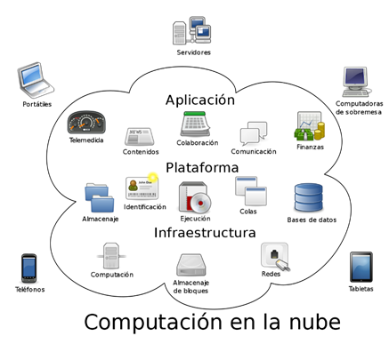

Las redes en la nube y móviles son sistemas de comunicación e interconexión de dispositivos que se han vuelto imprescindibles para las empresas y personas en la era digital en la que vivimos. La nube y los dispositivos móviles son herramientas que ofrecen una gran versatilidad y comodidad para acceder a información y realizar tareas desde cualquier lugar y en cualquier momento, pero detrás de estas funcionalidades hay una infraestructura compleja de redes que soportan la enorme cantidad de datos y aplicaciones que se utilizan en la actualidad.
El término “nube” se refiere a la tecnología de computación en la nube, que permite a las empresas y usuarios acceder a recursos informáticos, como almacenamiento y capacidad de procesamiento, a través de Internet. Esto significa que los archivos y programas no están almacenados en el dispositivo del usuario, sino en servidores remotos, lo que permite una gran flexibilidad y escalabilidad en el uso de aplicaciones y servicios. La nube se ha convertido en una herramienta fundamental para empresas de todos los tamaños, desde pequeñas start-ups hasta grandes corporaciones, ya que les permite reducir costos, mejorar la eficiencia y aumentar la productividad.
Los dispositivos móviles, por su parte, se han convertido en una parte integral de la vida cotidiana de las personas en todo el mundo. Los smartphones y tablets permiten a los usuarios acceder a una amplia variedad de aplicaciones, redes sociales, juegos y otras actividades que les mantienen conectados con sus amigos, familiares y el mundo en general. Los dispositivos móviles han revolucionado la manera en que interactuamos con el mundo digital, permitiéndonos estar conectados desde cualquier lugar y en cualquier momento.
La combinación de la nube y los dispositivos móviles ha generado una gran cantidad de oportunidades para empresas y usuarios, pero también ha presentado desafíos únicos para los ingenieros de redes y los desarrolladores de aplicaciones. En la actualidad, las redes deben ser capaces de manejar grandes cantidades de tráfico de datos y proporcionar una experiencia de usuario óptima, incluso en situaciones de alta demanda. Además, los desarrolladores de aplicaciones deben asegurarse de que sus programas funcionen de manera confiable y eficiente en una amplia variedad de dispositivos y sistemas operativos.
Uno de los desafíos más importantes que presenta la nube y los dispositivos móviles son las preocupaciones relacionadas con la privacidad y la seguridad. Con el almacenamiento de información en servidores remotos, los datos personales pueden estar en riesgo de ser interceptados o robados por piratas informáticos. Además, los dispositivos móviles pueden ser vulnerables a virus y malware que pueden ser utilizados para robar información y causar daños al dispositivo. Las empresas y los usuarios deben ser diligentes en la protección de sus datos personales y en la selección de aplicaciones y servicios confiables.
Otro desafío importante que enfrentan las redes en la nube y móviles es la necesidad de mantener el acceso y el rendimiento a medida que se expanden y evolucionan. Las empresas necesitan ser capaces de agregar nuevos usuarios y dispositivos a su red de manera efectiva, sin afectar el rendimiento general. Las fluctuaciones en la demanda y el tráfico de datos también pueden presentar desafíos de escalabilidad y rendimiento para los ingenieros de redes y los desarrolladores de aplicaciones.
A pesar de estos desafíos, la nube y los dispositivos móviles presentan una gran cantidad de oportunidades para las empresas y los usuarios. Las empresas pueden aprovechar la nube para reducir costos y mejorar la eficiencia de sus operaciones, y los usuarios pueden disfrutar de una mayor comodidad y flexibilidad al acceder a una amplia variedad de aplicaciones y servicios desde sus dispositivos móviles.
Para que las redes en la nube y los dispositivos móviles puedan funcionar de manera óptima, es necesario un enfoque integrado que combine la infraestructura de redes y las aplicaciones en la nube y en los dispositivos móviles. Los ingenieros de redes y los desarrolladores de aplicaciones deben trabajar juntos para garantizar una experiencia de usuario fluida y confiable, y para proteger la privacidad y la seguridad de los datos.
La estrategia para la implementación de una red en la nube y móvil debe ser considerada cuidadosamente, teniendo en cuenta los requisitos específicos de la empresa y de los usuarios finales. La elección de una plataforma de nube confiable y de alta calidad es esencial, y también lo es asegurarse de que se cumplan los mayores estándares de seguridad y privacidad.
Además, las empresas deben asegurarse de seleccionar aplicaciones y servicios que sean adecuados para su negocio y para sus usuarios, y que puedan funcionar de manera coherente y confiable en una amplia variedad de dispositivos. Los desarrolladores de aplicaciones deben ser diligentes en la prueba y el monitoreo de sus programas, y deben trabajar estrechamente con los ingenieros de redes para asegurarse de que todas las aplicaciones estén optimizadas para un rendimiento óptimo.
las redes en la nube y móviles son herramientas poderosas que están transformando la manera en que las empresas y los usuarios interactúan con el mundo digital. Con los desafíos actuales en cuanto a privacidad y seguridad, y la necesidad de mantener el rendimiento y la escalabilidad a medida que la tecnología continúa evolucionando, es esencial para las empresas y los desarrolladores de aplicaciones trabajar juntos para garantizar que las redes en la nube y los dispositivos móviles continúen ofreciendo beneficios a largo plazo para las empresas y usuarios.